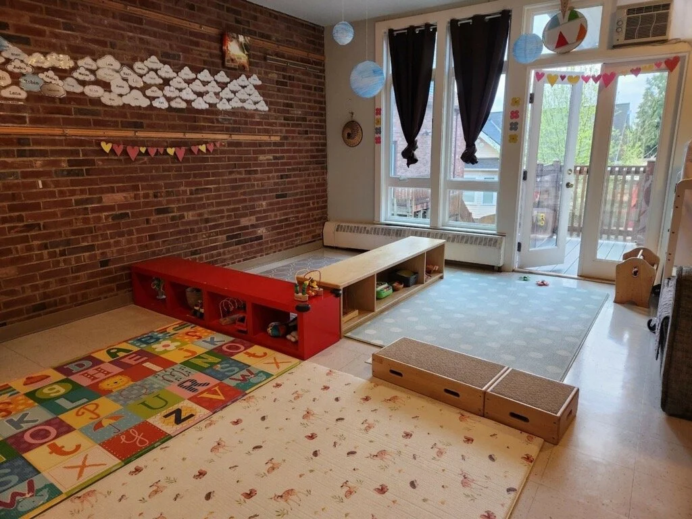
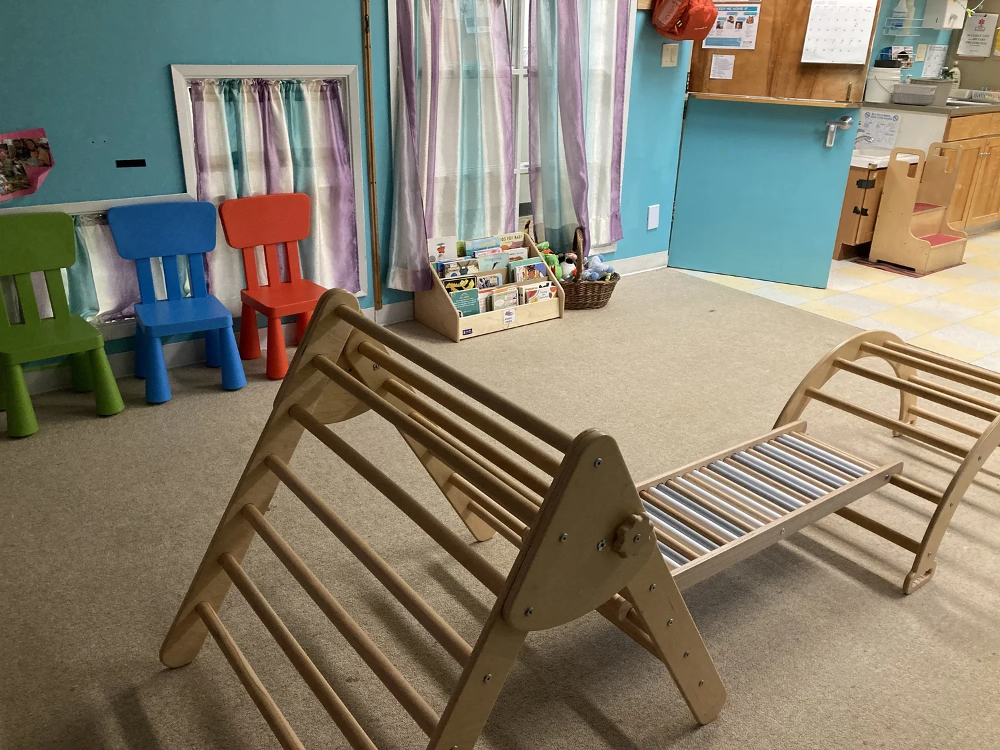
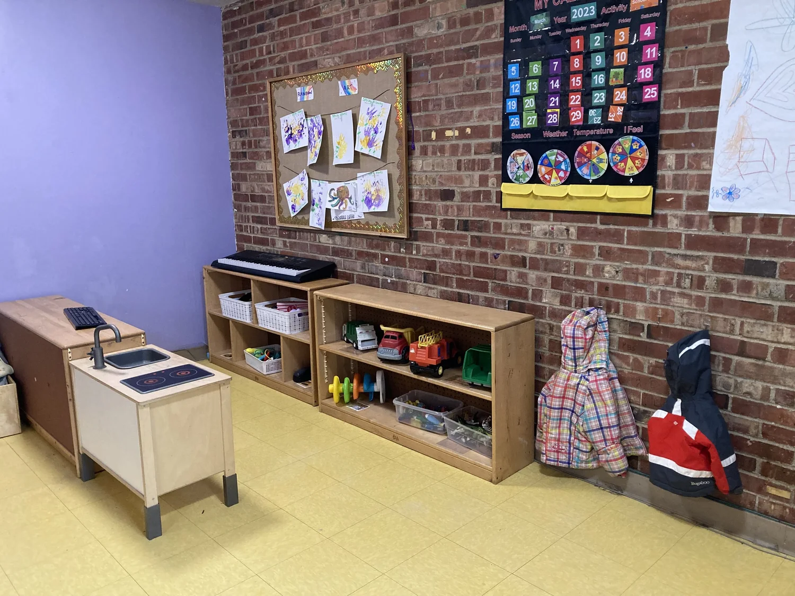
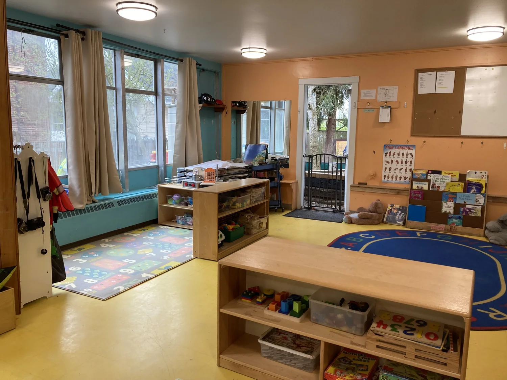
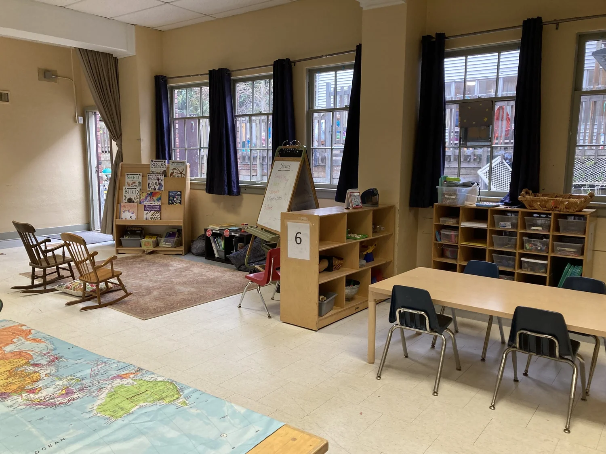

Home / Classrooms
Five rooms, one community
Classrooms that grow with your child
Each room keeps small ratios and a curriculum tuned to its age group — from our youngest infants to confident pre-kindergartners getting ready for their next big step.

Cloud Room
Our infant room emphasizes a responsive, emergent curriculum that follows each child's individual rhythms. Babies are honored as capable, curious learners from their very first days with us.
- 6 children · 2 teachers
- Floor mattresses for freedom of movement
- Communal mealtimes and outdoor deck access

Sunshine Room
Young toddlers focus on the basic skills of daily life — removing shoes, hanging coats, and tidying up — building real independence through gentle routines.
- 8 children · 2 teachers
- Toddler-sized tables and self-help routines
- Daily outdoor play

Rainbow Room
Emergent curriculum shapes the experiences here, with an emphasis on language and social-skill development as children learn to play and problem-solve together.
- 10 children · 2 teachers
- Art activities and frequent playground time
- Toilet-training support

Star Room
Academic readiness is introduced in playful, integrated ways — colors, shapes, and letters woven into everyday discovery and cooperative play.
- 14 children · 2 teachers
- Cooperative play and outdoor movement
- Fine-motor art projects

Rocket Room
Our pre-kindergarten room is full of science experiments, hands-on exploration, and discovery-based learning — building a strong runway toward kindergarten.
- 17 children · 2 teachers
- Foundational writing, language, and math
- Art and active outdoor play
At a glance
Ages, sizes & ratios
| Room | Ages | Children | Ratio |
|---|---|---|---|
| Cloud | 2–14 months | 6 | 1 : 3 |
| Sunshine | 1–2 years | 8 | 1 : 4 |
| Rainbow | 1.5–2.5 years | 10 | 1 : 5 |
| Star | 2.5–3.5 years | 14 | 1 : 7 |
| Rocket | 3.5–5 years | 17 | 1 : 9 |
WCCC is licensed for 58 children, 8 weeks to 5 years of age.
Find the right room for your family
We currently have openings for 2–5 year olds, with waitlists for our younger rooms. Schedule a tour to see the classrooms in person.